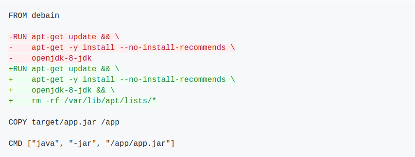
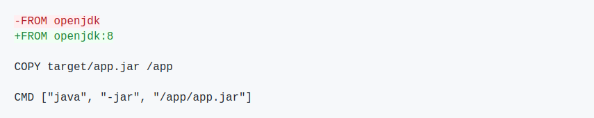

Docker
Docker/Containerisierung vs. Virtualisierung
- Virtuelle Maschinen (VM):
- Isolation von Hardware
- Jede VM hat ihren eigenen Kernel
- Großer Overhead (OS, Treiber, ...)
- Containerisierung:
- Isolation von Software
- Mehrere Container teilen sich den Kernel und andere Ressourcen des Host-Systems
- Leichtgewichtiger als VMs

Übersicht Docker
- Docker ist Freie Software (https://github.com/docker/docker-ce)
- Geschrieben in Go
- Isolierung von Software durch Containervirtualisierung
- Einfache und schnelle Bereitstellung von Anwendungen unabhängig vom Host-System
- Unterstützt Modularität (Microservices)
- Versionskontrolle/Rollbacks
Zentrale Docker Begriffe
- Dockerfile
- Textdatei mit Schritt-für-Schritt "Bauanleitung" für Docker-Images
- Image
- Endprodukt des Bauens eines Dockerfiles, "Speicherabbild"
- Container
- Konkret (laufende) Instanz eines Images
- Registry
- Privates oder öffentliches Repository für Images, etwa https://hub.docker.com/
Zentrale Docker Befehle
Häufige Docker Befehle für die Kommandozeile:
docker help- docker help [command], z.B.
docker help build
- docker help [command], z.B.
docker build- zur Erzeugung eines Images aus einem Dockerfile
docker run- zum Starten eines Containers auf Basis eines Images
docker log- zum Einsehen der Logs eines laufenden Containers
docker stop- zum Stoppen eines laufenden Containers
docker ps- listet alle aktuell laufenden Container
docker exec- ermöglicht die Ausführung von Befehlen in einem Container
docker images- listet alle lokalen Images
docker pull- lädt ein Image aus einer Registry
docker push- lädt ein lokales Image in eine Registry
Architektur Docker Engine

Aufgaben:
- Öffnen Sie ein Terminalfenster und führen Sie folgenden Befehl aus:
docker run hello-world - Versuchen Sie die einzelnen Schritte der Ausgabe dieses Befehls zu erläutern.
Dockerfile
Das Dockerfile beschreibt durch die Auflistung von Befehlen der Form [BEFEHL] [parameter] den Aufbau des Images, das aus ihm erzeugt wird.
Die wichtigsten Befehle in Dockerfiles:
FROM- der erste Befehl und bestimmt das "Vater"-Image, das als Startpunkt dient
- Beispiel:
FROM ubuntu:18.04
RUN- führt den übergebenen Parameter als
- es können nur Befehle ausgeführt werden, die im Image möglich sind und somit vom Vater-Image abhängen
- Beispiel:
RUN sudo apt-get install -y apache2
COPY (bzw. ADD)- kopiert lokale Dateien vom Host-System in das Image
- Beispiel:
COPY local_image.jpg /opt/image.jpg
WORKDIR- wechselt im Image in das übergebene Verzeichnis
- Beispiel:
WORKDIR /opt
CMD (bzw. ENTRYPOINT )- definiert den Standardbefehl, der später vom Container ausgeführt wird. Diesen Befehl kann es nur einmal pro Dockerfile geben (oder der letzte "gewinnt").
- Beispiel:
CMD echo "Hello world"oderCMD myScript.sh
EXPOSE- dient der Dokumentation des Prozessports
- Beispiel:
EXPOSE 8080
Hinweis: RUN, COPY und ADD erzeugen immer einen neuen, eindeutigen "Layer". Das resultierende Image ist letzlich die (geordnete) Sammlung von zahlreichen Layern.
Beispiel
Dockerfile
FROM busybox
RUN echo "Hello World" > /fossgis.txt
RUN cat /fossgis.txt
CMD ["cat", "/fossgis.txt"]
Image bauen
docker build -t fossgis:1.0.0 .
Image starten
docker run --name fossgis-test fossgis:1.0.0
Aufgaben:
- Fügen Sie die obigen Inhalte der Beispiel-Dockerfile in eine neue Datei
namens
Dockerfilein einem beliebigen Verzeichnis ein, bauen Sie das Image und starten den Container. - Welche Ausgabe erhalten Sie jeweils?
Best practices
- Reihenfolge der Befehle beachten, sie wirkt sich auf das Caching der Layer aus:

- Quellen möglichst explizit kopieren:

RUNBefehle nach Möglichkeit bündeln:

- Keine unnötigen Abhängigkeiten installieren:

- Paketmanager-Cache löschen:

- Nach Möglichkeit offizielle Images benutzen:

- Möglichst spezifische Tags nutzen:

- Möglichst kleine Basisimages nutzen, die kompatibel sind:
REPOSITORY TAG SIZE
openjdk 8 624MB
openjdk 8-jre 443MB
openjdk 8-jre-slim 443MB
openjdk 8-jre-alpine 443MB
- Multi-Stage Builds verwenden:

(https://www.docker.com/blog/intro-guide-to-dockerfile-best-practices/)